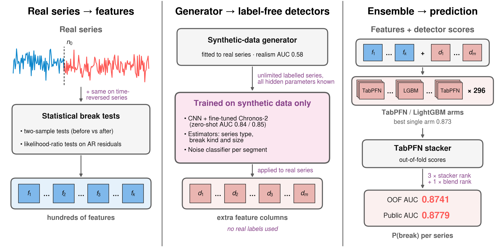
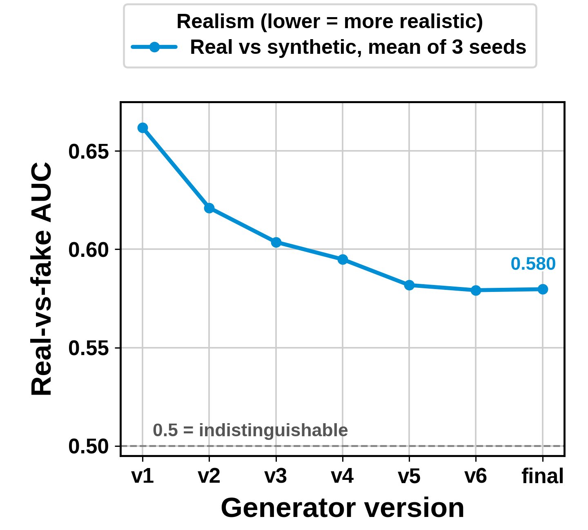
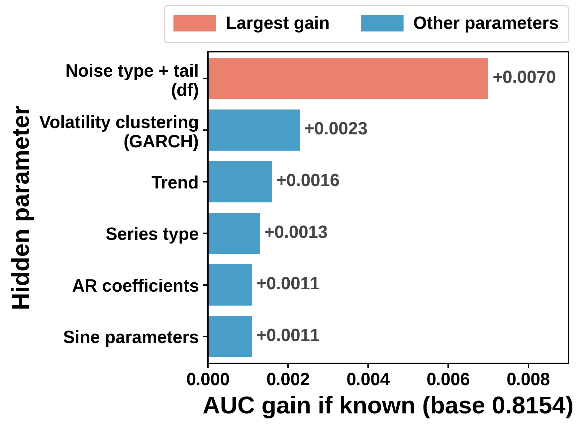
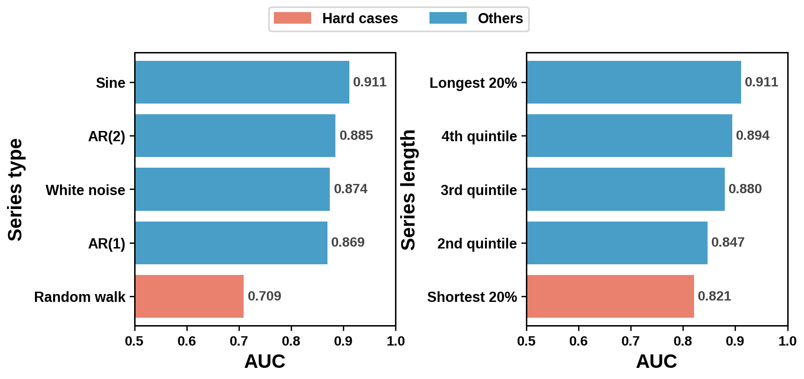

Summary. Final Kaggle selections: blendXFS public 0.87791, OOF 0.8741, and blendTFS public 0.87641, OOF 0.8724 (recipe: TRAINING_LATEST.md §6). Qualification submission: blendG2 (public 0.86386, OOF 0.8657); CPU-only reference blendD_r12 (public 0.86076), reproduced bit-for-bit by predict.py in 31 s on 2 cores. The core idea: rebuild how the data was made, then learn from synthetic data. We fitted a generator to the training series for realism (real-vs-fake classifier AUC 0.66 → 0.58, no labels), trained detectors only on its series (a public Chronos-2 model fine-tuned as a break classifier reaches AUC 0.845 on the real training set without ever seeing its labels), and fed them with our change statistics into TabPFN arms and a TabPFN stacker. Measured gains: residual-transform statistics (+0.008 OOF), TabPFN (+0.006), time reversal (+0.002), synthetic detectors and stacker (0.8684 → 0.8741, §3).

Each series is a univariate sequence with a known boundary (period 0 / 1); the target is whether a lasting process intervention happened at the boundary (ROC-AUC). A change can be in level, variance, dependence or the noise distribution; in our calibrated generator about one in three level / variance breaks is only ~0.25 sd, invisible by eye. All numbers below are out-of-fold (OOF) over StratifiedKFold(5, shuffle, seed 42) on whole series (24,000 training series; no series is split). Everything learned from data is fitted inside the training part of a fold: early stopping uses an inner 10% split of the fold-train rows; feature selection for interaction features is redone in every fold on the inner-train rows only; pseudo-label and label-cleaning experiments were nested. A reversed copy always stays in the fold of its original series, so a validation series never enters training or a TabPFN context in either direction. The synthetic CNN is pretrained without any real label. Differences between variants are judged with a paired bootstrap of the OOF AUC (95% CI) and by per-fold agreement, never by the public leaderboard (public AUC on ~1,520 rows has a standard deviation of about 0.009, larger than most effects we test; OOF on 24,000 series about 0.002). Each change is first screened fast, then confirmed at full settings; quick gains usually halve.
features.py, harvest.py): pre/post moments, quantiles, variance ratios, Levene/KS/Mood/AD/energy tests, CUSUM/Chow-type statistics, autocorrelation and spectral changes, boundary windows of several widths. Ideas from public ADIA 2025 write-ups (no code copied).factory.py): the same statistics on AR(10) prediction residuals and their absolute values fitted on the pre segment — the largest single gain of the project (OOF 0.833 → 0.841).probe/joint_lr.py, probe/noise_lr.py, probe/gen_feats.py, probe/model_feats.py).probe/ku_gen.py, probe/sim_series_ku2.py; team-generated synthetic data, allowed by the rules): a generator calibrated to the training data produces 30k labelled fakes per bag. LightGBM estimators trained on them predict the hidden generator parameters (family, break kind and sizes, noise type) of each real series: 31 columns, averaged over 6 bags.probe/sim_tensor.py, probe/seq_pretrain.py, probe/seq_emb.py): a dilated 1-D CNN (64 channels) is pretrained on 600k of our own synthetic series, aligned at the boundary (z-scored values, AR(10) residuals, period mask). It predicts break / no break plus the hidden generator parameters as auxiliary tasks. Without seeing any real label it reaches AUC 0.81 on the real training series (0.84 after continued pretraining on the realism-fitted generator, §3). Its 512-d embedding (PCA to 32) and the head outputs become 53 label-free features, computed for every series and for its reversed copy.probe/confirm_pair.py): in each fold, the top-K features by gain of a quick model fitted on the fold's inner-train rows are rank-transformed and all pairwise differences and products are added (K=60 gives 3,540 columns). This lifted the best single model from 0.8559 to 0.8575 OOF.LightGBM arms (lr 0.02, 31 leaves, min_child 40, feature_fraction 0.5, bagging 0.8, early stopping 300 on the inner split, 3 seeds per fold). TabPFN arms: the public pretrained TabPFN 3.5 run on each fold's top-K features (K 40–100, whole fold-train as context, 8 estimators). The best TabPFN input is the raw values of the top-K features plus the synthetic-pretrained CNN features, for the series and for its time-reversed copy side by side (single-arm OOF 0.8672).
blendK is a fixed-weight rank blend of 10 arm groups (group = mean of ranks; exact weights in TRAINING_LATEST.md / src/probe/stack_tpf_sub.py); the CPU fallback blendD uses only the LightGBM pair and interaction groups.
The LightGBM weights (2/1/2) were chosen by cross-validation over a small grid (picked on 4 folds, scored on the 5th). Each later TabPFN group was added with one weight from {3, 6, 9, 24}, kept only if the OOF gain had a bootstrap CI above zero and held in all 5 folds. These weights were chosen on the full OOF, so the last gains (+0.0003 to +0.0007 each) may be slightly optimistic. No weight was ever tuned on the public leaderboard.
| Model / blend | OOF AUC | Public AUC |
|---|---|---|
| LightGBM, 242 classical features (baseline pipeline) | 0.8327 | – |
| + residual transforms, generator LR features (combo10gnj) | 0.8539 | 0.85415 |
| blendD / blendD_r12 (CPU fallback): 11 pair arms ×2 + interaction ×1 | 0.8606 | 0.86076 |
| blendG2 (qualification): + time-reversal pair arms + reversed-context TabPFN | 0.8657 | 0.86386 |
| blendK: + side-by-side TabPFN on longer-pretrained CNN features | 0.8684 | 0.86971 |
| blendNFS: + nuisance-pretrained CNN, Chronos-2, TabPFN stacker | 0.8706 | 0.87416 |
| blendOFS: + TimesFM-2.5 group | 0.8710 | 0.87356 |
| blendRFS: + Chronos-2 fine-tuned on synthetic series as a break classifier | 0.8719 | 0.87550 |
| blendTFS (selected): + classifier retrained on the realism-fitted generator genR10 | 0.8724 | 0.87641 |
| blendXFS (selected): + realistic fakes in the estimators, segment noise classifier | 0.8741 | 0.87791 |
Each step is a paired-bootstrap improvement that is higher in all 5 folds: blendK +0.0007 [+0.0003, +0.0010] vs blendJ. Stacked rows (NFS–XFS) are outer-CV OOF of the TabPFN stacker (seeds 11 / 13 agree within 0.0001).
From blendK to blendXFS: learning from a rebuilt generator. (1) A TabPFN stacker on the logits of all arms plus label-free context replaces the fixed weights (+0.0004 to +0.0005 over the linear blend at each step). (2) Generator fitted for realism: we changed one generator setting at a time and kept it only if a real-vs-fake classifier (LightGBM on 34 segment statistics) found the fakes harder to spot: 0.662 → 0.580 (Figure 2; e.g. bimodal and GARCH noise only in white noise, lighter t tails, spikes, smaller trends). (3) Chronos-2 as a break classifier (public 120M forecaster, encoder of 512 points on each side of the boundary, two variates: z-series and AR residual), trained only on synthetic series: zero-shot AUC (forward view) 0.8408 → 0.8438 after retraining on genR10, 0.8455 with the reversed view averaged in; its embeddings feed new TabPFN groups. (4) Segment noise classifier: an oracle test (Figure 2; LightGBM on 90k fakes, tested on 30k held-out fakes) showed that knowing the pre-segment noise type and tail is worth +0.0070 AUC, more than all other settings together, so a LightGBM trained on genR10 fakes predicts noise type, tail weight (1/df) and volatility clustering (GARCH) from AR(5)-whitened residuals of each segment (type accuracy 0.82 on fakes), applied before and after the boundary. It catches breaks a variance test misses (same spread, heavier tails). It helped at every level: best LightGBM 0.8567 → 0.8588 (+0.0021, CI [+0.0011, +0.0032]), best TabPFN arm 0.8716 → 0.8729, stacker 0.8733 → 0.8741, public 0.87641 → 0.87791. Negative results of this phase: CHANGELOG_FINAL.md.



| Ablation of blendK (groups removed, other weights unchanged) | OOF AUC | Δ [95% CI] | folds down |
|---|---|---|---|
| blendK (all 10 groups) | 0.8684 | – | – |
| − all TabPFN groups (LightGBM only) | 0.8627 | −0.0057 [−0.0067, −0.0044] | 5/5 |
| − all groups that use time reversal | 0.8665 | −0.0019 [−0.0026, −0.0013] | 5/5 |
| − groups with synthetic-pretrained CNN features | 0.8677 | −0.0007 [−0.0009, −0.0004] | 5/5 |
| − all LightGBM groups (TabPFN only) | 0.8684 | +0.0001 [0.0000, +0.0002] | 1/5 |
LightGBM arms add no AUC on top of TabPFN here, but they carry the CPU route and choose the top-K features of every TabPFN arm.
| Submission | Route | How to reproduce | Cost |
|---|---|---|---|
| blendD_r12 (CPU fallback) | LightGBM only | predict.py + frozen checkpoints in ckpt/; output equal to the Kaggle file bit for bit | 31 s, 1 GB, 2 cores |
| blendG2 (qualification) | + TabPFN | TRAINING_GPU.md + make_blendG2.py; reproduces the Kaggle file exactly | minutes on one GPU |
| blendK … blendXFS / blendTFS (final) | + CNN, Chronos-2, stacker | TRAINING_LATEST.md §1–6, ckpt/seq/, manifests/; fine-tuned Chronos-2 checkpoints (~486 MB) by SHA-256, on request | one GPU |
Rounding rule: every arm vector is rounded to 12 decimals before ranking, so ties do not depend on floating-point noise. Training hardware: KU Madar HPC CPU nodes (64–96 cores, Slurm), a local 32-core workstation; two local RTX 4090 GPUs for the TabPFN arms and for CNN pretraining (one GPU is enough). Python 3.12/3.13, LightGBM 4.6.0, scikit-learn 1.7, NumPy 1.26, pandas 2.3, SciPy 1.16 (requirements.txt). Randomness: every split, model and generator seed is fixed in code. Data: only the supplied competition data plus team-generated synthetic series (generator code included); no external datasets. Sources: public ADIA 2025 write-ups (ideas only); Page (1954) CUSUM; Andrews (1993) tests for unknown change points; Dempster et al. (2020) ROCKET; Hollmann et al. (2025, Nature) TabPFN, version 3.5 public pretrained weights; Bai et al. (2018) temporal convolutional networks (dilated CNN design); Chronos (Ansari et al., 2024) / Chronos-2 and TimesFM-2.5 (Das et al., 2024) public forecasters; time-reversal augmentation follows the general data-augmentation literature for time series (Wen et al., 2021). AI use: an AI coding assistant (Anthropic Claude, via Claude Code) helped write and run analysis code, design experiments and draft this report under continuous human review; the assistant executed code on our own machines; its context contained summary statistics, scores and occasionally a few printed values of individual series while debugging, but no competition files, label files or prediction files were uploaded to any third-party AI service (data stayed on the local workstation and the university HPC). Details in AI_DISCLOSURE.md.